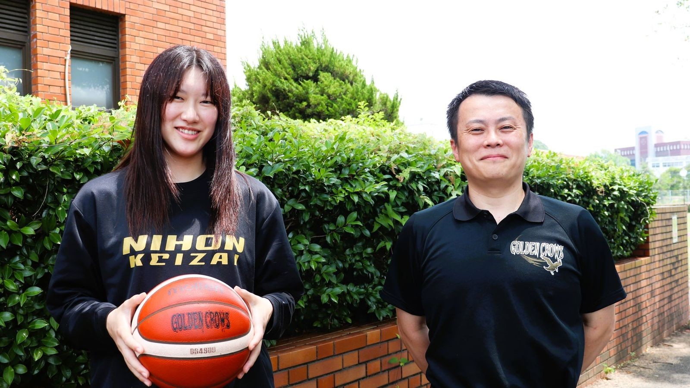

日本経済大学、 バスケ部の監督と学生が国際舞台へ —— 片桐監督が日本代表コーチとしてジョーンズカップ、中老選手はWKBLフューチャーズリーグの日本学生選抜に
日本経済大学（福岡県太宰府市、学長：都築明寿香）は8月24日、男子バスケットボール部の片桐章光監督（健康スポーツ経営学科教授）が8月13日から23日まで台湾で開催された国際大会「第45回ウィリアム・ジョーンズカップ」に日本代表コーチとして参加したと発表した。女子バスケットボール部からは中老小雪選手（健康スポーツ経営学科3年・浜松開誠館高等学校出身）が日本学生選抜メンバーに選出され、同部の案浦知仁監督（経済学科准教授）もアシスタントコーチとして韓国開催の「2026 WKBLフューチャーズリーグ」に参加した。

片桐監督、ジョーンズカップで日本代表コーチに
片桐監督は本学で男子バスケットボール部を率いる一方、8月13日から23日まで台湾で開催された「第45回ウィリアム・ジョーンズカップ」に日本代表コーチとして参加した。同大会は各国・地域の代表チームが参加する国際大会。日本は予選リーグで1勝5敗となり、7位決定戦でマレーシアを88-59で下した。片桐監督は「世界で戦うためには技術だけでなく、フィジカルの強さと厳しい局面でも戦い抜くメンタルが不可欠であることを改めて実感した」とコメントし、今回の経験を本学男子バスケットボール部の指導に生かす考えを示している。
中老選手・案浦監督、WKBLフューチャーズリーグの日本学生選抜へ
女子バスケットボール部では、中老小雪選手が日本学生選抜チームのメンバーに選出された。同部を率いる案浦知仁監督もアシスタントコーチとして同チームに帯同し、韓国女子バスケットボールリーグ（WKBL)主催の「2026 WKBLフューチャーズリーグ」に参加した。同大会には将来の女子バスケットボール界を担う若手選手が各国から集まっており、本学からは選手と指導者の双方が国際舞台での経験を積んだ。
地域の子どもたちへの指導にも力
本学男子バスケットボール部は、台湾やフィリピンの大学トップチームも参加した「第2回 University Basketball Top League」（佐賀県吉野ヶ里町）にも出場。大会期間中には地域のU-12・U-15世代を対象にしたバスケットボールクリニックを開催し、部員8名がシュート・パス・インサイドプレー・ドリブルの4グループに分かれて小中学生約70名を指導した。大学では、指導者と学生が国内外の舞台に挑戦するのと並行して、こうした地域との交流にも継続して取り組む方針としている。
出典: 都築学園グループ（日本経済大学）プレスリリース「【日本経済大学】日本経済大学より日本代表コーチ・日本学生選抜選手が国際舞台へ」（PR TIMES・2026年8月24日）
https://prtimes.jp/main/html/rd/p/000000334.000020664.html